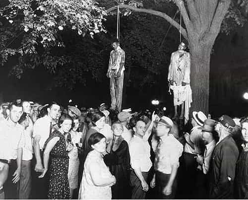
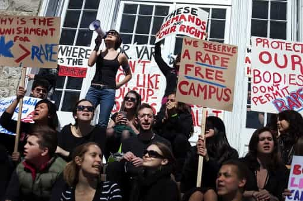

< < < Back
Indian Lynch Mob Kills Two Men, Shows The Same Disturbing Mentality Seen In The United States – Return Of Kings
Two men in India have been killed by a lynch mob due to accusations (not convictions) of rape. Though mob mentality in the United States has not yet reached this point, recent events suggest it may be moving in that direction. Both of these men have extraordinary relevance in the context of due process and rape accusations, irrespective of whether the suspect did or did not rape someone. We will never know what truly happened.
Syed Farid Khan is now dead, having been forcibly removed from a well-protected detention facility in the north-eastern city of Dimapur in Nagaland. He was stripped naked, hit with fists, stones, and whatever other objects people could find, and then dragged, still nude, for seven kilometers (between four and five miles) from a motorcycle. He was then strung up in a city square like some 2015 Benito Mussolini.
In the northern city of Varanasi, another man was publicly executed after allegations of sexual molestation by girls.

Khan, a Bangladeshi in India, deserved his fate no more than these two men.
Critics of sites such as Return of Kings will point out that this horrendous murder took place in India, not the United States or Europe. Feminists will wash their hands of the situation and attribute it to a pack of people almost exclusively male, ignoring reports that dozens, perhaps hundreds of girls in school uniforms helped lead the angry mob.
Yet aside from the outcome, how is the mentality of this mob any different from the mobs laced throughout American colleges? And given the superior education and wealth of the average American, shouldn’t those in the US be held to a higher social and moral standard?
Both breeds of mob are dedicated to vilifying people accused of a crime and dispensing with established legal principles. In the case of college mobs or those supporting them, much of the time the “accused” has not even been charged by police, let alone convicted of an actual crime.
Paul Nungesser was (and still is) the victim of a mob
Paul Nungesser, the man accused in the Columbia mattress girl false rape fiasco, still has his physical life. But the ex-boyfriend and sexual partner of Emma Sulkowicz continues to face a social lynching. When, if ever, this lynching stops, his reputation is permanently sullied, not from any proven misdeed, but through others’ harassment, defamation, and innuendo.
I have mulled over for weeks, even before this Indian news came to light, about whether I should identify Nungesser in an article. On balance, because his name is already out in the open, usually to pillory him or atavistically juxtapose him with the word “rape,” however tendentious the use, I decided to be one of those rallying for his disregarded moral and legal rights.

“Anti-rape” protests are now typically conflated with calls for an absence of due process, hence a social lynch mob.
We all need further reminding that Nungesser was neither charged by the police nor found “responsible” by the woefully biased college tribunal system. Despite many colleges using a “preponderance of evidence” model, rather than the higher “beyond reasonable doubt”, the standard is in practice much lower. Accused and their representatives (if they’re even allowed one) are usually unable to test the accuser’s allegations through any form of cross-examination. “Attorneys” are often forced to be silent and are simply observers of the “process” in specific instances or generally.
At the head of the anti-Paul Nungesser mob were public figures such as Jessica Valenti and New York Senator Kirsten Gillibrand, who grotesquely defamed Nungesser by calling him a rapist. Their cowardly method was to not mention Nungesser by name, though it was either public knowledge or readily accessible that he was the only person Sulkowicz had claimed raped her.
In February, Valenti mustered the audacity to refute claims that Nungesser had been hard done by, all whilst not mentioning her own public statements calling him a rapist.
Feminists want the right to call someone a rapist without due process
Just as this mob in India condemned a man without even a modicum of due process, feminists demand the right to call someone a rapist without ever resorting to modern inconveniences such as the rule of law. Somehow, just somehow, they think, a “rapist” found “responsible” by a college tribunal is equally culpable as someone convicted of rape by a court.
And when even the self-serving college tribunal fails to “convict,” SJW’s such as Valenti and Gillibrand will be waiting, still happy to claim rape where absolutely zilch has been proven. To them, you’re a rapist whether convicted, found responsible or nothing at all. Non-court procedures, no matter how much they resemble a kangaroo court, are window-dressing to create an acrylic veneer of due process.

Her Guardian overlords force her to occasionally use the word “alleged,” but otherwise Jessica Valenti was happy to refer to Sulkowicz’s ex-boyfriend as “her rapist.”
In the meantime, the social lynching creates terrible processional effects. Despite not being found criminally responsible, the socially accused rapist is often kicked out of college. Modern sharing of information, including of “disciplinary” matters, means many or all colleges will reject them if they seek to transfer.
Without a college degree and having lost years of their life (years of both potential income and wasted college tuition), their lifetime earnings are grossly depleted. Their friends abandon them and the strain on their families is immense and intense.
When academics and others defend the concept of due process, and highlight the gross unsuitability of colleges to determine “rape” cases, these brave, principle-driven individuals are called “rape apologists” infected with a rabies-like sexism.
What’s right is not always popular
In the time of John Locke, the separation of powers and due process were alien concepts to not just average citizens but also the elites. Over recent years, due process in particular has fallen out of fashion, all while its proponents are slandered as encouraging and supporting rape.
Sometimes the most graphic outcomes of anti-due process hysteria have to be unearthed and presented to start restoring balance. Syed Farid Khan and his fellow victim in Varanasi, sadly, are two of those examples.
Read More: New Evidence Suggests Mattress Rape Victim Emma Sulkowicz Made It Up